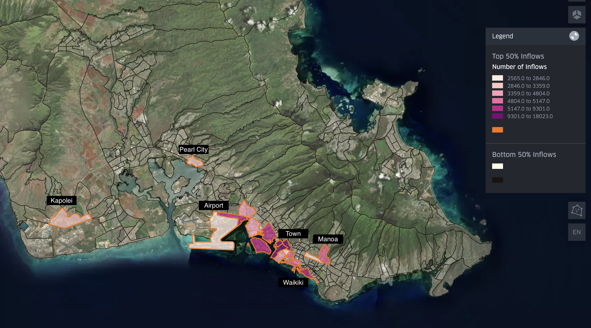
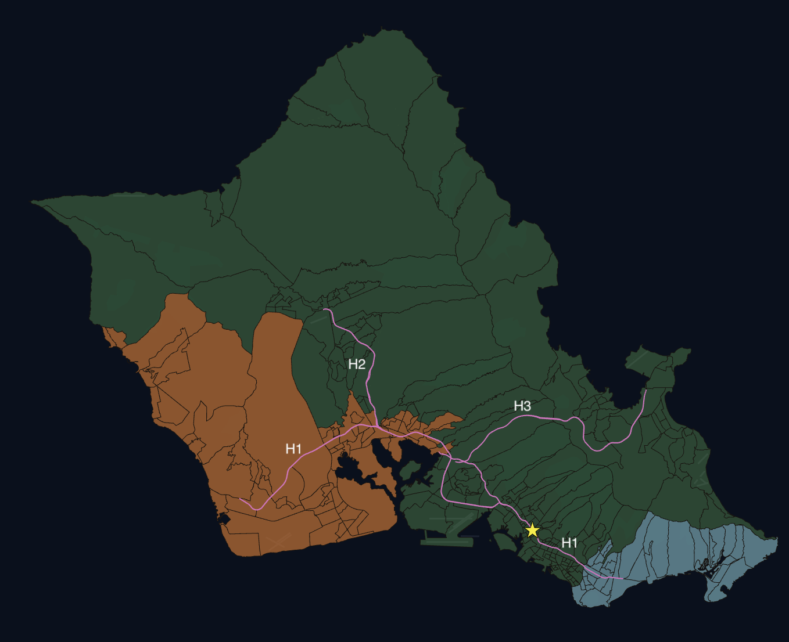
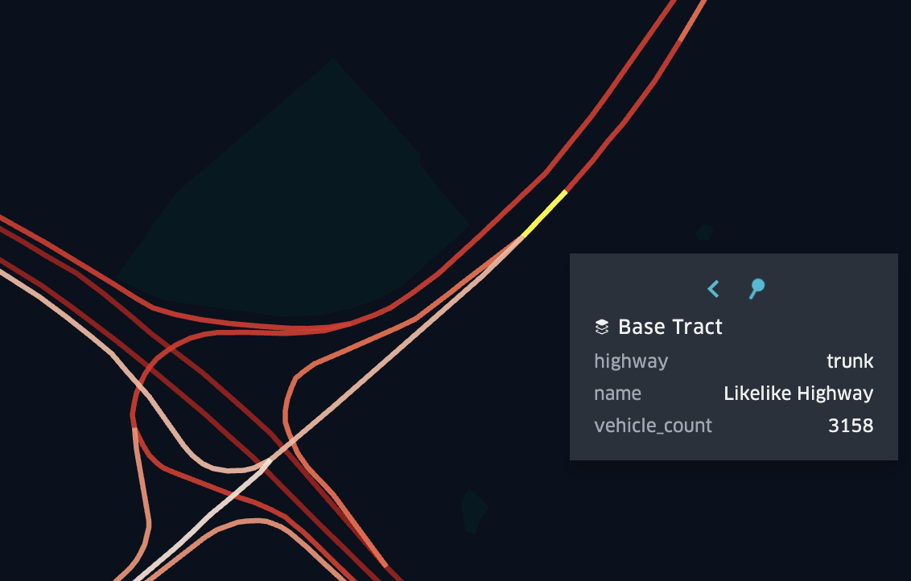
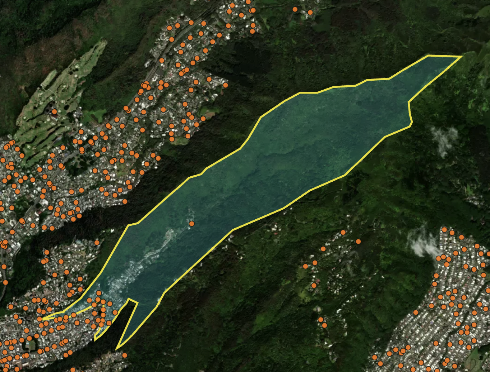
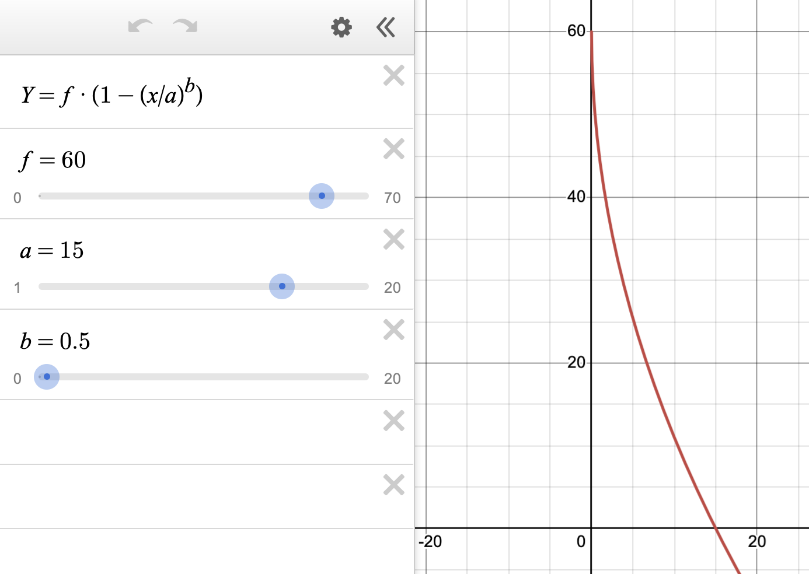

For the past several months, I've been developing a computational model to assess how the Honolulu Rail might alleviate Oahu's notorious traffic congestion. While my final interactive map remains in development, I’m sharing my analytical approach here.
Note: This article is best viewed on a computer, rather than a mobile device.
Oahu's traffic congestion ranks among the most severe in the United States, with morning rush hour routinely doubling commute times. This chronic congestion is due to two geographical realities: (1) the island's highly concentrated employment centers and (2) the limited routes into the city.
Fig 1: Census Tract Inflow Map
Oahu’s employment opportunities concentrate along the island’s southeastern edge. Figure 1 illustrates this dense concentration at the Census Tract level, revealing that merely 16 Census Tracts accommodate over 50% of the island's entire workforce. Even within this concentrated group, substantial disparities exist. The central Town districts—home to corporate headquarters and professional offices—employ up to six times more workers than areas like Pearl City, Kapolei, and the Airport. This employment hierarchy descends from the dense urban core of Town to Waikiki's tourism hub, Manoa's university campus, the Daniel K. Inouye Airport, and finally to Pearl City and Kapolei—areas the government is actively developing as satellite urban centers. This extreme concentration of workplaces along the island's edge creates a funneling effect, forcing traffic through limited access points and generating severe bottlenecks into Town.
Fig 2: East West Map
Oahu's mountainous topography fundamentally shapes its road network. The steep ridges of the Ko'olau and Wai'anae Mountain Ranges, combined with the island's coastal boundaries, severely restrict viable transportation corridors. Town, the primary location center, is indicated by the star symbol on the map.
There are 3 main motorways in Oahu’s road network. The H1 is the focal motorway and it stretches from Kapolei in the West to Kahala in the East. The H2 (which connects to Mililani and the North Shore) and the H3 (which connects to Kaneohe) funnel into the H1, creating a choke point west of Town. Rather than most cities which have a wheel and spokes network of motorways with the city in the center, in Oahu, Town is on one of the spokes. This setup forces congestion to accumulate as you get closer to Town from the West side of the island.
In Figure 2, there are two groups of colored Census Tracts: (1) the West side in orange and (2) the East side in blue. Other than living in Town itself (between these two regions), these are the most populous parts of the island. The West side of the island represents 28% of the total Oahu population and the East side of the island represents ~10%. Both regions use the H1 to commute to Town, but they approach from opposite directions. The West side of the island has much more traffic and longer commute times.
Fig 3: East West Income Comparison & Fig 4: East West Race Comparison


While establishing direct causality would require dedicated research, the correlation between traffic patterns and socioeconomic distribution is striking. The data reveal pronounced disparities: East side communities have shorter commutes, higher household incomes, and whiter populations than their West side counterparts.
Figures 3 & 4 compare income and demographic characteristics between the East and West Census Tracts. The West side of the island has 10% greater percentage of households below $100k annual income than the East side and it has half as many households with an income greater than $200k. The West side has half as many white people (as percentage of population) and three times as many Pacific Islanders. It takes only an hour to drive from Makaha (the furthest Western edge) to Hawaii Kai (the furthest Eastern edge) in free flow conditions, and yet there are dramatic differences between these two regions.
Oahu's severe traffic congestion has long been apparent to residents, prompting the state to undertake its most ambitious infrastructure project ever: a comprehensive rail system. Though plans have existed since the 1960s, the project only gained official momentum in 2010 when voters established the Honolulu Authority for Rapid Transportation (HART). Construction began in 2011 with an initial budget projection of $4 billion, but costs have since inflated to an estimated $12.4 billion, triggering public skepticism.
The rail system is deployed in phases, with the first segment (Skyline) connecting East Kapolei to Aloha Stadium having opened on June 30, 2023. Phase 2, extending the line to Pearl Harbor, and the airport, is scheduled for completion by October 1, 2025. The final phase, which will bring the rail to the center of the city, remains years away with a targeted 2031 opening date.
Over the past 15 years, Honolulu's rail project has faced significant delays and budget overruns, eroding public confidence. Yet the critical question remains: Will this enormous investment ultimately deliver on its promise to alleviate traffic congestion?
My analysis quantifies the Honolulu rail's impact on island-wide traffic congestion through a dynamic simulation tracking over 190,000 individual vehicles during their morning commutes. The model captures each vehicle's position at 60-second intervals, precisely measuring its contribution to congestion on specific road segments. Each simulated vehicle calculates its optimal route based on real-time traffic conditions at its departure time. By running the simulation chronologically from 5 AM until all commutes are completed, the model accounts for the cascading effects of earlier travelers on subsequent traffic patterns, creating a comprehensive picture of how congestion develops and propagates throughout the morning rush hour.
My traffic simulation integrates multiple data sources. Using Longitudinal Employer-Household Dynamics (LODES) data, I precisely map commuter flows between residential and employment Census Blocks across the island. I construct Oahu's transportation network from OpenStreetMap data, capturing road connections and their specific characteristics, such as speed limit and number of lanes. Through geospatial analysis, I align these datasets and supplement them with American Community Survey (ACS) data to accurately model morning departure time distributions. To calibrate the simulation, I incorporate a sample of both free-flow and peak congestion travel times from Google Maps API, establishing realistic edge weights within the network model. The final simulation quantifies the Honolulu rail's impact by systematically removing rail-eligible vehicles from the road network, revealing how this infrastructure project could transform island-wide traffic patterns.
| Source | Description | Usage in Model |
|---|---|---|
| Longitudinal Employer-Household Dynamics (LODES) | Census data tracking commuter flows between home and work locations | Maps origin-destination patterns at Census Block level |
| OpenStreetMap (OSM) | Road network data with nodes, edges, and road characteristics (lanes, length, type, speed limit) | Creates detailed network graph with physical road properties |
| American Community Survey (ACS) | Census Block Group data on transit use, carpooling, and commute departure times | Determines modal split and morning departure time distributions |
| TIGER Shapefiles | Geographic boundary files for Census Blocks, Census Block Groups, and Census Tracts | Provides spatial framework for geospatial analysis and visualization |
| Google Maps API | Real-time and historical travel times for 10,000 commute routes | Calibrates network edge weights for both free-flow and congestion conditions |
| HART Transit Station Locations | Coordinate data for all Honolulu rail stations | Maps potential rail ridership catchment areas for intervention analysis |
My simulation incorporates several carefully considered assumptions to address data limitations. First, since LODES data exclusively captures work commutes, I've implemented strategic offsets to account for missing travel patterns. For school-related traffic, I calibrated the model using Google Maps congestion data from summer days when schools are not in session, allowing me to isolate and analyze work-only traffic patterns. Tourism, while significant to Hawaii's economy, minimally impacts morning rush hour patterns as visitors typically travel outside peak periods or in directions counter to the main commuter flow (most hotels are concentrated in Town). Military personnel, another substantial demographic, often reside on bases (no impact on roadways) or commute to bases away from Town near Wahiawa and Mokapu, with low overall contributions to traffic congestion.
For departure timing, I strictly adhere to the ACS-reported distribution within each Census Block Group—for instance, if ACS indicates 10% of residents in a particular Block Group depart at 7:00 AM and 15% at 7:30 AM, I apply this exact distribution. However, a limitation exists in that these departure times are assigned based solely on residential location without considering specific commute destinations. This approach may miss potential correlations between commute distance and departure time, as longer-distance commuters may leave for work earlier in the morning. Finally, my simulation tracks vehicle queuing but does not model queue spillback effects. While this theoretically underestimates congestion in extreme cases, my calibration against actual Google Maps congestion data helps correct for this limitation, ensuring the model's predictions remain aligned with observed traffic patterns.
Key Network Elements
- Nodes: Points where road links terminate, typically intersections
- Edges/Links: Road segments connecting two nodes
My transportation network relies on OpenStreetMap (OSM) data, which requires significant preprocessing. As an open-source platform, OSM contains varying degrees of completeness across its attributes.
Simplified depiction of the OSM data:
| Origin Node | Destination Node | Road Type | Speed Limit | Number of Lanes | Link Length | One-way | Geometry |
To ensure model integrity, I performed several critical data cleaning steps. First, I eliminated disconnected network components to create a strongly connected graph—one where any node can be reached from any other node—preventing routing failures during simulation. I also removed self-referential edges (those with identical origin and destination nodes), which primarily represented cul-de-sacs.
Fig 5: Example of How Highways Are Split in OSM
A distinctive advantage of OSM is its representation of divided roadways. Rather than modeling highways as single bidirectional links, OSM creates separate one-way edges with distinct node sets for each direction of travel, as illustrated in Figure 5. This separation proves crucial for realistic route optimization. A unified bidirectional representation would permit physically impossible maneuvers such as mid-highway U-turns or wrong-way exit usage. By maintaining directionally independent node structures, the network more accurately reflects real-world driving constraints and behavior.
The Origin-Destination (OD) Matrix represents LODES (Longitudinal Employer-Household Dynamics Origin-Destination Employment Statistics) data in a structured format. This matrix maps all possible (over 386,000) pairs of Oahu's Census Blocks, quantifying worker movement patterns between locations. I enrich this matrix with ACS demographic data and subsequently match the OD Matrix Census Blocks to the nodes in the Road Network dataframe.
Understanding FIPS Code Hierarchy
FIPS (Federal Information Processing Standards) codes follow a hierarchical structure with nested geographic elements:
- State (2 digits)
- County (3 digits)
- Census Tract (6 digits)
- Block Group (1 digit)
- Block (3 digits)
This nested organization means multiple Census Tracts combine to form a County, and so forth. The LODES dataset operates at the Census Block level (most granular), providing higher spatial resolution than ACS data, which is aggregated at the Census Block Group level.
ACS contains two critical data elements for my analysis: transportation modes and departure times, both recorded as raw counts within Census Block Groups (CBGs). For instance, a sample CBG might show 10 residents using public transportation and 20 departing for work at 7:30am. I transformed these raw counts into percentages and mapped them to the corresponding Census Blocks in the OD Matrix. By multiplying these percentages against the total worker count from the OD Matrix, I created proportionally accurate distributions. This allowed me to implement a stratified random sampling approach to select representative individuals within each CBG while maintaining the overall demographic patterns observed in the data.
A significant methodological challenge emerged from the granularity mismatch between datasets. With over 75% of Origin-Destination pairs representing just a single person, applying ACS percentage filters often resulted in fractional vehicle counts per OD row. To address this, I aggregated at the CBG level and then distributed individuals based on probabilistic sampling that preserved the overall transportation mode distribution. Additionally, I refined the temporal resolution by disaggregating the 30-minute departure time intervals from ACS into 5-minute increments. This temporal redistribution prevents artificial congestion spikes that would occur if all commuters within a 30-minute window departed simultaneously. The resulting staggered departure pattern creates a more realistic simulation of traffic flow conditions throughout the network while maintaining statistical fidelity to the original data.
Fig 6: Example Assigning Node to CB
Next, I mapped Census Blocks from the OD Matrix to Nodes in the Road Network dataframe by performing geospatial operations with the TIGER shapefile. Oahu's unique geography presented a challenge, as many Census Blocks are arranged in long, thin strips stretching up mountainsides - mirroring the traditional Hawaiian ahupua'a farming system. In these cases, homes are clustered on the bottom edge of the Census Blocks with dense forest everywhere else. A model grounded in reality would choose road network nodes near the residential areas within the Census Block, rather than blindly choosing from the center.
Figure 6 illustrates this exact feature in Census Block "150030044022001". Road network nodes are in orange and the satellite imagery shows how homes are clustered in the bottom of the valley. The sole node in the center of this Census Block would be a poor representation of where the housing community departs from.
The map shows that node density is correlated with urban density. I leverage this relationship in my node assignment algorithm. Rather than selecting the node at the Census Block's center, which would position it far from the residential cluster, I developed an algorithm to identify a list of nearby nodes and nodes within the Census Block. From this subset, I calculated the geometric median (the node with minimum total distance to all other nearby nodes). This approach prevents outlier nodes from skewing the final assignment, ensuring residential areas connect to their realistic access roads. This method leverages the correlation between dense residential areas and road intersection density, providing a more accurate representation of how people access the transportation network.
With the OD Matrix mapped to the road network dataframe, I next prepared free flow travel time. While OSM data contained speed limits, I needed a model grounded in real-world driving behavior where vehicles accelerate and decelerate on road links. Except on highways, vehicles rarely maintain constant speeds, and I needed to capture how road transitions affect actual travel speeds.
Several real-world relationships influenced my approach. Actual driving speed depends on both the current road link and the next one. On residential roads, many intersections have stop signs, causing drivers to accelerate and decelerate, yielding overall speeds lower than the posted limits. On highways, drivers maintain speed under free flow conditions, often exceeding posted limits. Merging onto highways from smaller roads typically involves waiting periods.
To capture these behaviors, I categorized OSM road types into more generalized groups: Major, Minor, Link, and No Connections (where 'Link' specifically refers to connecting segments between different road types, typically highway on/off-ramps, and will always be capitalized in this article). I then developed a matrix of all possible transition combinations (e.g., Major-Minor, Minor-Link), termed "road connection pairings," and assigned appropriate penalty weights to each. There are 12 road connection pairings in total.
The process of mapping actual road segments to these pairings presented significant complexity, as most road segments interface with multiple other segments. To resolve this, I implemented a clear hierarchical prioritization (Major > Link > Minor), eliminated self-referential connections (reverse edges), and systematically favored higher-classification connections when a segment presented multiple potential pairings. This structured approach ensured consistent classification throughout the network while maintaining realistic transition penalties.
With weights and tagged road connection pairings in place, I calibrated a free flow travel model using Google Maps as ground truth. I sampled 10,000 routes from my OD Matrix, focusing on trips over 2 miles (as shorter routes wouldn't be useful for calibration) and selecting diverse Census Block Group pairs rather than purely random selection. This approach ensured I captured longer routes and included all network route types. The 10,000-route limit was imposed to manage API costs.
I then placed these routes on the road network dataset, applied penalty weights, and ran algorithms to determine optimal paths. By comparing the resulting travel times with Google Maps data, I iteratively tested over 100 different penalty weight combinations. Rather than using a hill climbing algorithm, I tested a matrix of weight combinations, selecting the best match to Google Maps estimations while maintaining conceptual consistency with real-world experience. This prevented overfitting with counterintuitive penalties (like heavily penalizing Major-Major connections while minimally penalizing Minor-Minor).
The final model aligns with real-world free flow travel: 100% of routes within 30 minutes of Google estimates, 99.96% within 10 minutes, and 88.52% within 5 minutes. These results are particularly significant given that the sample included Census Block combinations with longer routes. For typical commuting distances, accuracy would be even higher, as shorter routes generally have greater precision. For example, relatively few people make daily commutes from distant locations like Kahuku to downtown Honolulu, but these types of routes are represented in my sample of 10,000. Importantly, these calibrations improved how the model captures individual road link dynamics, which ultimately determines where congestion occurs and which routes become slower or faster under various conditions.
After calibrating free flow speed for each road link using real route data from Google, I developed a comprehensive equation detailing the relationship between traffic congestion and vehicle speed. My approach extends beyond conventional Highway Safety Manual methodologies by incorporating empirical observations and actual driving behavior patterns.
My model incorporates "following distance" – the safety spacing between consecutive vehicles on a roadway. This distance is calculated using a standard safety time gap of 2 seconds:
$$ \text{Following Distance} = \text{Free Flow Speed} \times \text{Safety Time Gap} $$
This equation represents one of several driving principles in the model: vehicles moving at higher speeds require greater following distances for safety. This relationship helps explain spacing patterns observed on different road types—vehicles maintain larger gaps on high-speed motorways compared to slower residential streets.
Road capacity is then calculated using the formula:
$$ \text{Capacity} = \left( \frac{\text{Road length}}{\text{Average Car Length} + \text{Following Distance}} \right) \times \text{Number of Lanes} $$
This equation reveals an important inverse relationship: roads with higher free flow speeds actually have lower vehicle capacity because they require greater following distances. Using the standard 2-second following distance, I calculate what I term "Safe Design Capacity."
I also calculate a theoretical "Physical Maximum Capacity" using a fixed 1-meter following distance. This represents the absolute maximum number of vehicles that could physically occupy the roadway if packed closely together. Unlike "Safe Design Capacity," this "Physical Maximum Capacity" is independent of free flow speed—a road with 60 mph FFS will have the same Physical Maximum Capacity as a road with a 20 mph FFS, provided they have identical length and number of lanes.
From these capacity values, I derive two critical comparative metrics:
$$ \text{Capacity Expansion Factor} = \left( \frac{\text{Physical Maximum Capacity}}{\text{Safe Design Capacity}} \right) - 1 $$
$$ \text{Congestion Ratio} = \left( \frac{\text{Number of Vehicles}}{\text{Safe Design Capacity}} \right) - 1 $$
"Capacity Expansion Factor" quantifies how much larger the theoretical maximum capacity is compared to the Safe Design Capacity. Roads with high free flow speeds (FFS) have lower Safe Design Capacity, resulting in higher “Capacity Expansion Factor” values.
"Congestion Ratio" measures the actual congestion level relative to Safe Design Capacity. For example, a value of 0.1 indicates the road is operating at 10% over its designed capacity based on safe following distances.
Congestion speed is modeled by the following equation:
$$ \text{Congestion Speed} = \text{Free Flow Speed} \times \left( 1 - \left( \frac{\text{Congestion Ratio}}{\text{Capacity Expansion Factor}} \right)^{\text{Weight}} \right) $$
Fig 6: Congestion Speed Graph
The link to an interactive Figure 6 is available here
In this interactive graph:
- f = Free Flow Speed (y-intercept)
- a = Capacity Expansion Factor (x-intercept)
- b = Congestion Sensitivity Factor (controlling curve shape)
- y = Congestion Speed (output)
- x = Congestion Ratio (input)
This visualization allows you to dynamically adjust parameters and observe how they affect the speed-congestion relationship across different road types and congestion levels.
To ensure practical application in all traffic conditions, a minimum congestion speed of 1 mph is implemented as a lower bound.
In this equation, Free Flow Speed acts as the y-intercept (speed when no congestion exists), while “Capacity Expansion Factor” defines the x-intercept (theoretical point of complete stoppage). The Congestion Sensitivity Factor controls the curve's shape, determining how rapidly speeds decrease as congestion builds. Lower weight values cause congestion speed to initially decrease more sharply when roads exceed capacity. Conversely, increasing the Congestion Sensitivity Factor reduces the calculated travel time across congested segments.
My model satisfies four essential criteria for realistic traffic behavior:
- Roads maintain their free flow speed when operating at or below capacity
- Speed reduction occurs continuously and smoothly as volume exceeds capacity
- Roads with higher free flow speeds maintain higher absolute speeds under identical congestion conditions
- Higher free flow speed roads reach congestion earlier due to their naturally longer following distances
This approach offers two significant advantages over alternative methods:
- Avoids Fixed Following Distance: Using a fixed following distance would artificially inflate motorway capacity and fail to appropriately differentiate between road types. In reality, a 60 mph highway should accommodate fewer vehicles than a 20 mph local road of equal length and lanes due to necessary safety spacing.
- Refines Fixed Safety Time Gap: While safety time gaps are important, a strictly fixed implementation would excessively penalize highways. My model recognizes that as congestion increases and speeds decrease, vehicles naturally reduce following distances, effectively increasing road capacity.
The "Capacity Expansion Factor" parameter, serving as the x-intercept in my equation, is crucial for creating appropriate congestion speed curves. It produces a flatter slope for higher free flow speed roads, counterbalancing their stringent "Safe Design Capacity" limitations.
The fundamental requirement I addressed was ensuring that between two otherwise identical road segments (same vehicle count, length, and lanes), the road with higher free flow speed would maintain higher congestion speeds. Previous models often produced counterintuitive results where highways experienced lower congestion speeds than local roads under identical conditions—primarily because their capacity equations overly penalized high-speed roads.
This insight drove the development of the Capacity Expansion Factor variable and its implementation as the x-intercept in the speed-congestion equation.
I developed a dynamic traffic assignment model that realistically simulates morning commuter patterns across Oahu's road network. Operating at 60-second intervals, my model captures real-time congestion effects by tracking individual vehicles from origin to destination, rather than merely calculating aggregate flows.
My research began with a comprehensive analysis of existing traffic models, which proved inadequate for evaluating Honolulu's rail system effectiveness. Available models were either too microscopic (focusing on single intersection dynamics) or too macroscopic (employing oversimplified assumptions about speed and congestion). The distinctive strength of my approach lies in its ability to track over 190,000 individual vehicles simultaneously, with each vehicle dynamically influencing network conditions—creating congestion that reshapes optimal routing for subsequent vehicles.
The simulation architecture employs four primary data structures:
- Queue Vehicles: Vehicles awaiting departure at scheduled times
- In-Route Vehicles: Vehicles actively traversing the network
- Completed Vehicles: Vehicles that have reached their destinations
- Road Network Dataframe: Road segments with continuously updating attributes that reflect changing congestion levels
The simulation operates through a four-stage loop. First, vehicles already on the road move forward to complete their road link. That way, the drive time on their existing link isn’t affected by the congestion from incoming vehicles. Second, new vehicles enter the network at their scheduled departure times and are assigned an optimal route based on current congestion conditions. Third, the system updates road link congestion speed by counting vehicles on each road segment and calculating the slowdown effects when volume exceeds capacity. Finally, each vehicle moves through the network at realistic congestion speeds, with the system recording how long each trip takes. Throughout the simulation, vehicles move from “Queue Vehicles,” to “In-Route Vehicles,” and finally to “Competed Vehicles.” I run this simulation until all vehicles have completed their routes.
To fine-tune the simulation's accuracy, I calibrated the Congestion Sensitivity Factor—a key parameter that shapes how speed decreases as traffic builds up. This process mirrors my earlier Free Flow Speed calibration but focuses specifically on rush hour conditions. I ran multiple iterations of the simulation with different sensitivity values, then compared the results against a benchmark of 10,000 Google Maps drive time estimates collected during morning rush hour. The sensitivity values of 0.1, 0.05, 0.02, and 0.01 all resulted in 100% accuracy within 15 minutes of Google Maps predictions. From that list, I chose a sensitivity value of 0.05, since it produced congestion speeds that aligned with my empirical understanding.
The final phase of this project involves simulating congestion patterns under various HART transit scenarios. I started with a list of scenarios (from 10k vehicles removed from the road, to 50k) and applied these modified traffic patterns to my simulation model.
In this analysis, I mapped the 21 proposed HART transit stations to their corresponding 18 Census Tracts. Only 2,400 commuter vehicles both originate and terminate within these tracts, representing trips that could be completely replaced by HART service. To capture additional potential ridership, I identified approximately 52,000 vehicles (from the total 191,000 in the OD Matrix) with destinations within the station tracts. These represent commuters who might drive to a station and complete their journey by train. Using free-flow traffic conditions, I calculated optimal network paths for these 52,000 vehicles. For each vehicle's journey, I identified the earliest station node encountered and its position in the sequence, allowing me to evaluate potential park-and-ride opportunities throughout the proposed transit corridor.
Based on the earliest station node and its position data, I developed a function to modify the OD Matrix for various vehicle reduction scenarios. I prioritized vehicles by how quickly they would encounter a HART station during their journey, with earlier station encounters given preference for transit conversion. For these selected vehicles, I updated their destination nodes to the earliest station node they would encounter, simulating a park-and-ride scenario. I then ran multiple congestion simulations comparing these modified scenarios against the base model. The differences between these models were calculated and aggregated at both the origin tract and hourly departure time level. I represented congestion effects with median values and excluded tract/departure time combinations with fewer than 20 vehicle observations, preventing conclusions based on insufficient sample sizes.
This approach properly sorts vehicles by those most likely to use HART and applies their updated routes to the congestion simulation. The advantage of this approach is that it adapts to any quantity of vehicles HART estimates will be removed from the network.
Note: code and datasets are available upon request.